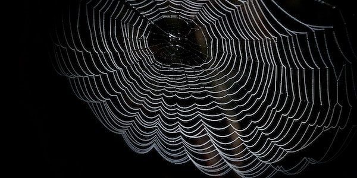

Aracnofobia
Uma das fobias mais comuns está relacionada à aranha, um aracnídeo de oito pernas que pode ou não ser venenoso para o ser humano. Apesar da aparência assustadora, muitas espécies são inofensivas e quase invisíveis a olho nu. Porém, isso não impede que várias pessoas sintam medo excessivo desse animal.
O condicionamento na infância é uma das principais causas da aracnofobia. Muitas crianças são ensinadas por seus pais ou responsáveis a temer ou a evitar o contato com aranhas por causa da possibilidade de serem picadas. Quando chegam à idade adulta, não conseguem controlar o medo e a ansiedade diante desse bicho, mesmo que não represente um perigo real.